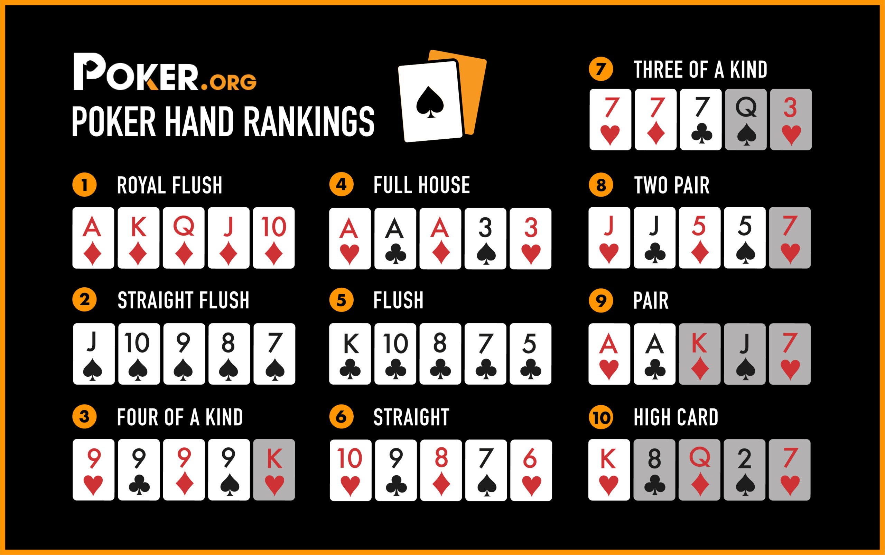

The Principles of Poker
Module 1 — The Fundementals
The fundemental goal of poker is to make the best 5 card combination with your two hole cards (face down). While Vincent and Rohan will provide their own unique tips and tricks (see the navigation bar for more!) the most efficient way to learn is by watching an online tutorial.
Click this link for our favourite online poker guide, filmed by Poker Stars!
Additionally, here's a helpful poker hands rank chart. We reccommend bringing a rank chart to your first few games, just to get a hang of the hierarchies.
Module 2 — Basic Strategy
UpswingPoker.com suggests the following 10 steps for beginners to follow:
1. Play Fewer Hands And Play Them Aggressively
2. Don't Be The First Player To Limp
3. "Semi-Bluff" Aggressively with Your Draws
4. Fast-Play Your Strong Hands to Build the Pot and Make More Money
5. Defend Your Big Blind (with the Right Hands)
6. Fold When You're Unsure
7. Attack When Your Opponent Shows Weakness
8. In Tournaments, Play Solid (Don't Worry About Survival)
9. Only Play If You Feel Like It
10. Only Play In Good Games
Module 3 — Equity and Pot Odds
In poker, equity is the term used to describe the percentage chance of winning a hand. It takes into account the strength of your hole cards, and the likelihood your hand will improve (also known as draw strength). To illustrate the concept of equity, take this example: suppose you have pocket Kings (xK xK), and the board shows a 9, 5, 3, 10, 4. If your opponent has two random cards, the probability of you winning is roughly 80 percent. If the hand is played to completion, you are likely to win 80 percent of the hand (which is your equity)
Pot odds are the ratio of the size of the pot to the size of the bet that a player is facing. Statistically, pot odds are useful to calculate the expected value of a call. Most poker pros use ratios to define pot odds (ie. 3:1) pot odds, but we like to convert them to percentages (25%). This way, it’s easier to determine whether or not you should make a call.
In our simulator, you are told to make a call if your equity is larger than your pot odds (plus other extraneous variables to tie-break and decisively determine what to do in a marginal or probabilistic situation). Feel free to experiment with our Equity Calculator, or visit the Quiz section to test your knowledge.
Module 4 — Positional Play and Ranges